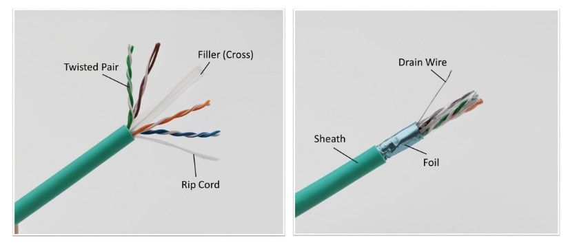

Fiziksel Katman
Verilerin elektriksel, mekanik, prosedürel ve işlevsel olarak iletiminden sorumludur. Yani veriyi bitler (0 ve 1) hâlinde kablolar, fiber optik veya radyo sinyalleriyle iletir.

UTP (Unshielded Twisted Pair) ve STP (Shielded Twisted Pair), ikisi de bükümlü çift (twisted pair) kablo türleridir ama aralarında koruma farkı vardır
Kablo Standartları
| Kategori |
Maks. Hız |
Maks. Mesafe |
Kullanım |
STP Desteği |
| Cat 3 |
10 Mbps |
100 metre |
Telefon, eski ağ sistemleri |
Yok |
| Cat 5 |
100 Mbps |
100 metre |
Temel ağ bağlantısı |
Yok |
| Cat 5e |
1 Gbps |
100 metre |
Yaygın kullanım |
Var / Yok |
| Cat 6 |
1 Gbps (10 Gbps kısa mesafe) |
55–100 metre |
Ofisler, yüksek hız |
Var / Yok |
| Cat 6a |
10 Gbps |
100 metre |
Profesyonel ağlar |
Genelde Var |
Kablo Standartlarını Belirleyen Kurumlar
- TIA/EIA (Telecommunications Industry Association / Electronic Industries Alliance)
Amerika merkezlidir.
- ISO/IEC (International Organization for Standardization / International Electrotechnical Commission)
Uluslararası geçerliliği vardır.
- IEEE (Institute of Electrical and Electronics Engineers)
Ethernet teknolojileri (örneğin 802.3) için standartları belirler.
Ana Sayfa
Data Katmanı (2)
Ağ Katmanı (3)
Transport Katmanı (4)
Uygulama Katmanı (5)(6)(7)